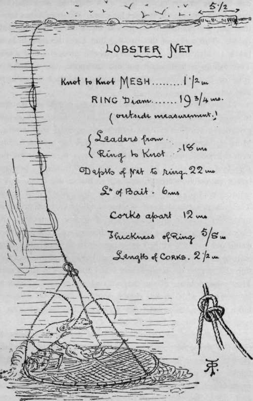
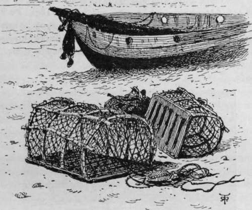
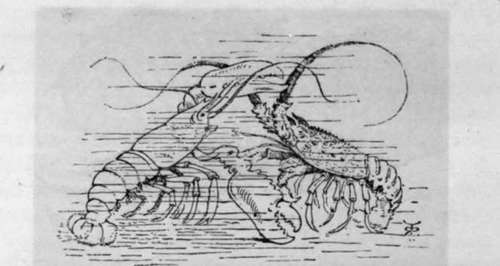

Crawfish. Part 3
Description
This section is from the book "Sea Fishing", by John Bickerdyke. Also available from Amazon: Sea Fishing.
Crawfish. Part 3
A deadly way of catching prawns is to lower a number of hoop nets exactly the same as for lobsters (p. 343), but smaller, to the bottom of pools and leave them there for a while. The net, which may measure eighteen inches in diameter, must be baited with dead crabs or other offal placed across it on a skewer. The cork at the end of the rope is laid hold of by means of a stick with a forked end—a clothes-line prop in miniature—and the net lifted. These nets are occasionally used from boats, but are best suited for those parts of the coast where there are large pools left among the rocks by the receding tide. Prawns and most other marine creatures appear to be most active as the tide begins to flow, and the first quarter of an hour of the flood tide is usually the most successful time to catch them. Where the prawns are plentiful the net is lowered into the pool and raised at the end of a few minutes, the rope being held meanwhile in the hand.
Another method of catching prawns is by setting what I may term fine-meshed lobster pots. Two are illustrated along with the shrimp net. They have to be baited with crushed crab to induce the fish to enter them.
Of the shrimp I need say but little. It is a fish of sandy shores, and no great exercise of skill is required to wade in knee deep and push the shrimp net along. Boys should not be allowed to use a man's shrimp net, but should be content with something half the size. Important shrimp fisheries are carried on in large estuaries and other places by small trawling boats, and, as I have said in a previous chapter, these fine-meshed trawl nets catch immense quantities of immature flat fish. The shrimps while still alive are sifted through sieves which separate the saleable from the undersized. Many of the shrimpers of the Thames estuary and elsewhere carry great cauldrons in which they boil their shrimps on board, so that by the time they come into port their catch is ready to be placed in the train and sent off without delay to London. The headquarters of the Thames shrimping industry is at Leigh, in Essex. Excepting some modern additions to the place, the whole of Leigh is inhabited by fishermen.
By the fishery bylaws of the Thames Conservancy, 'all shrimps'—by which, I suppose, is meant those which are caught—' to be sifted when alive through a sieve of three-eighths of an inch between the wires, all of which wires shall be placed either vertical or horizontal, and no shrimp which will pass through such sieve shall be kept or retained.' I suppose the makers of the bylaw understood it. I live in hopes of meeting some one who can explain to me the advantages of a vertical sieve.
The setting of traps, called pots, for lobsters and crabs hardly comes within the range of ' sport,' but the sea fisher may be glad of a little information on the subject. First, however, a few words as to the hoop net by which lobsters, when plentiful, can be caught. Years ago the Hebridean fishermen had the habit of going out in small boats to lay down these nets baited with offal. As soon as they felt a pull on the line they would haul up, when there was generally a lobster in the net. Now they say lobsters are so scarce that this method is of small service, and, in lieu of a single hoop, boats may be seen going laden with a large number of lobster pots.
At Walton-on-the-Naze this method of fishing is still carried on. The net, the measurements of which can be ascertained from the illustration, is let down on the bottom, and the line is buoyed. Those who are expert at the practice can feel by means of the line when anything is in the net, even distinguishing crabs from lobsters. When a fish has taken the bait, the net has to be hauled in at the greatest possible speed. The corks on the hauling line keep the sling lines or bridle steady, which is important, as the lobster is a shy fish. This fishing is a summer pursuit, excepting the months of June or July when the lobsters are changing their outworks or skeletons.
LOBSTER HOOP NET FROM WALTON-ON-THE-NAZE.
Finally there are lobster and crab pots, which are familiar to most of us. These can be made of ordinary wickerwork, galvanised wire, or of light framework covered with netting. More elaborate ones made for yachtsmen's use are of netting with collapsible frame. Mr. Hearder made a number for the Challenger Expedition which were arranged in sizes, the bottoms being removable, so that one would fit inside the other, and a quantity could be carried with a very small sacrifice of space. The galvanised iron traps of various kinds are not nearly so successful in taking fish as those of wicker or netting. At Cromer are some of the most clever lobster and crab fishermen round our coasts, and they use a pot with a piece of iron grating at its base. These pots are not round, but in the form of a section of a tunnel, the lobsters and crabs entering it at either end. Most other pots are of the shape shown on p. 34, and have to be weighted with bricks, stones, lead, or iron. Of whatever kind they are, they must be very carefully buoyed with a sufficiency of line and a sufficiency of cork.
The following are the dimensions of a Cromer lobster or crab pot, the same pots being used for both kinds of shell fish. Height, 11 ins. ; length, 23 ins.; breadth of iron base, 15 1/2 ins.; thickness of iron base, 1/4 in. ; number of iron bars in base, 7 ; mesh of net, 1 in. ; mouth of the openings (one opening on each side), diameter 8 ins. ; narrow end of openings, diameter 5 1/2 ins.
In a strong tide the corks may get sucked under, and the owner may deem the pots lost; but if the place is watched when the tide is slack, they will usually be recovered without difficulty, provided their position has been noted in true nautical fashion—that is to say, by taking marks.
Let me close my subject by the statement of a very interesting fact. When alive the lobster shell is a bluish-black colour, but the prolonged application of boiling water brings about a curious chemical change in the pigment, the creature turning red. In a picture which was exhibited at the Royal Academy some years ago, delineating, if I recollect aright, some incident occurring in Neptune's realm, one of the figures was a remarkable lobster, remarkable inasmuch as the chemical change in question appeared to have taken place before it had been boiled ! The artist was unmercifully criticised, and no doubt suffered much in spirit. But after all there was authority for the colour, for not only red, but white, blue, yellow, and also green lobsters have been caught. At Neptune's or any other court, those most gaily attired would naturally be the representatives of their race. These are words of comfort for the persecuted artist, who may verify them by referring to the ' Field' of May 24 and June 7, 1890, and Sept. 10, 1891 ; Buck-land's 'Curiosities of Natural History,' 1st series, p. 27 ; ' Land and Water'of May 30, 1891; and the Natural History Museum of South Kensington, where an albino lobster may be seen.
Cromer Crab Boat And Pots.
Lobster crayfish.
Continue to:
Tags
fishing, hooks, bait, fishermen, spanish mackerel, mackerel fishing